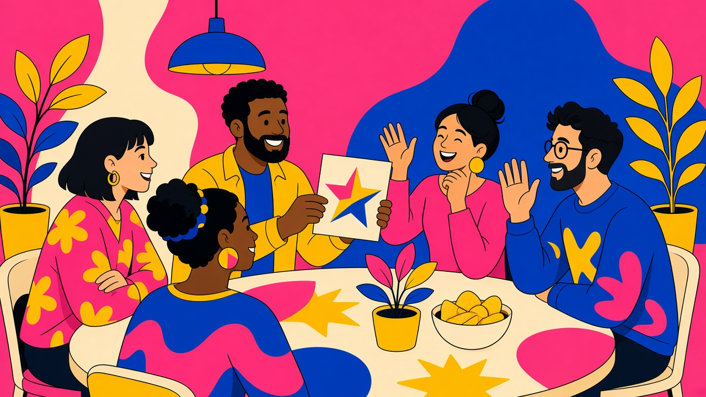

TipsyPlay Blog
Party Icebreakers for Adults Who Just Met
The first game should not require the most confidence. When guests barely know each other, start with invented things, predictable turns and a genuine right to watch.

On this page
Set the room up first
These three icebreakers are paper-or-spoken games you run yourselves, for four to eight adults — not TipsyPlay modes. No phones, personal disclosures or drinking rules are needed. Offer paper and pens, but accept spoken answers too. When the room warms up, Host Story Chain.
1. Design the imaginary clubhouse
Ask everyone to invent one feature for a clubhouse nobody actually has to build: a pancake lift, a silent reading hammock, a doorway for houseplants.
Go around once. Each person offers one feature or passes. On a second circuit, each willing player explains how two existing features work together. End when everyone has had that second opportunity. No votes, scores or “worst idea” award.
This gives new acquaintances a shared setting without asking where they work or who they date.
2. Pocket museum
Everyone draws an imaginary museum exhibit on paper. It can be as simple as a dot described aloud as “the world's most dramatic pebble.” Keep the drawing hidden until the reveal.
Take turns showing the drawing and supplying a one-sentence museum description. One volunteer may ask a gentle fictional question: “What noise does it make?” The exhibitor can answer or decline. Finish after one exhibit each. Don't ask for an encore.
3. The friendly forecast
Choose an imaginary destination together: a floating library, a moon garden or a town made of cushions. Each player contributes one forecast for the place, such as “light showers of bookmarks.”
Give each willing person one turn, then invite a volunteer to summarize the forecast. This is collaborative word play, not an invitation to joke about anyone's appearance or background.
When the room warms up
Ask the group whether they want another game or a conversation break. Story Chain is a phone follow-on: a shared prompt, a text box for one sentence, and a Pass button. Story Chain is for 3–10 players. The host picks 5, 10, 15, or 20 rounds. Your fictional clubhouse can inspire what people type. These three icebreakers are not built-in app modes.
Play responsibly
You must be of legal drinking age in your location.
Every game is opt-in. Passing is always allowed, without explanation or a replacement task. Water, soft drinks and alcohol-free play are full options. No drinking races, chugging, pressure to finish a drink, or penalties that stack from one turn to the next. If you choose alcohol, keep any sip small and optional; breaks never require a drink. Never drink and drive. Plan a ride home before you start.
Keep the night optional
If the group wants a phone follow-on, host Story Chain. It is for 3–10 players. A person who watches all evening still counts as a welcome guest.